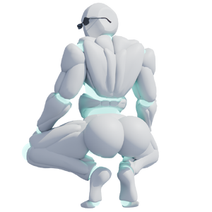

Melgor Johnson

背景
Melgor Johnson 被强行拉过传送门，是一台 Y-Style 自动机，可以为了喜剧效果改变身体形状。进一步询问后，他给出了关于自己运作方式的回答：
Q：“你叫什么名字？”
A：“My name’a Melon”
Q：“你为什么会变 Buff？”
A：“Because I can”
Q：“你的力量如何运作？”
A：“Mountain Dew Voltage…”
Q：“你从哪里来？”
A：“My house…”
Q：“你是谁？”
A：“The Creator of… uh… um… theres these cool games named-”
策略
Melgor Johnson 战斗由 2 个阶段组成。第 2 阶段中，他的招式组会获得额外伤害和更多电击攻击。
在第 2 阶段的任意血量下，Melgor Johnson 都可能拍击臀部，释放巨大的紫色冲击波。
统计
基础 HP：10000
伤害：物理和电击
| 属性 | 抗性 |
|---|---|
| 物理 | 中性 (1x) |
| 火焰 | 中性 (1x) |
| 冰霜 | 弱点 (1.5x) |
| 电击 | 抗性 (0.5x) |
| 光耀 | 中性 (1x) |
| 暗影 | 弱点 (1.25x) |
| 毒 | 中性 (1x) |